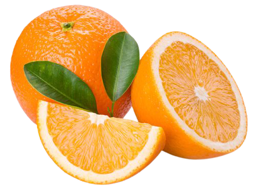
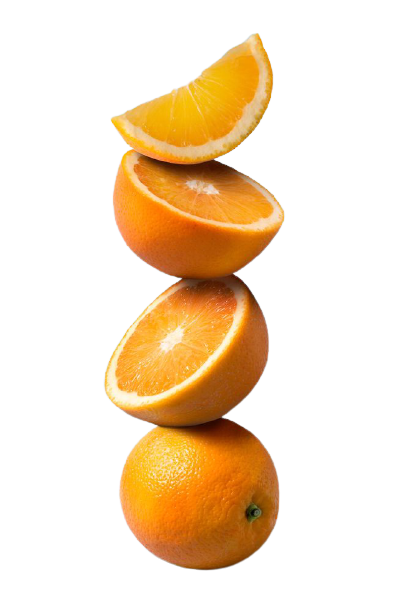

冬天吃了油膩食物，來片酸甜的柑橘最對味！
又名橘子、柑仔，是芸香科的果樹，原產地主要為中國南部以及印尼至印度東北部一帶的地區。
柑和橘都屬於芸香科柑橘屬的寬皮柑橘類，果實外皮肥厚且充滿檸烯香味，內藏瓤瓣，由汁泡和種子構成。
橘子中有許多維生素A，維生素A能增強人體在黑暗環境中的視力和治療夜盲症，但不宜食用過量，
吃太多會患有胡蘿蔔素血症，皮膚呈深黃色。

台灣的柑橘生產以冬天為主
柑橘產地集中中南部，包括苗栗、台中、南投、雲林、嘉義、台南，桶柑以中北部為主，包括新竹、苗栗、台中、
台北、宜蘭等地。
